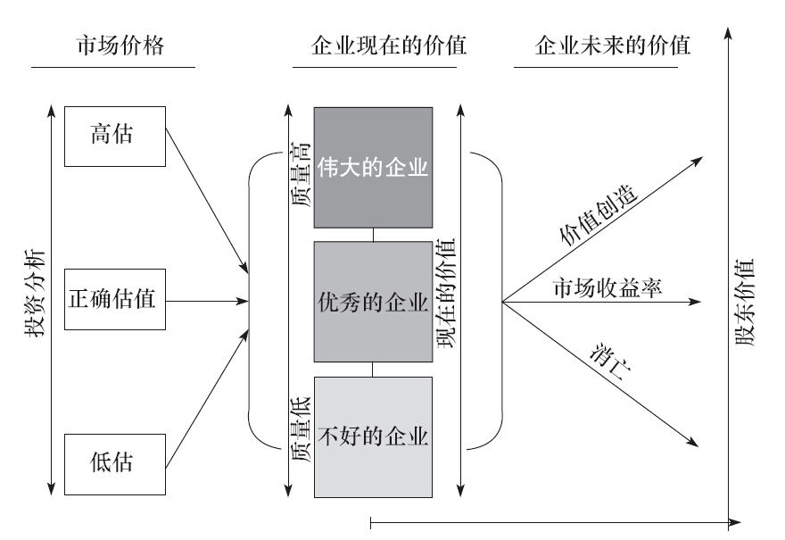

第3章 购买企业的12个坚定准则
第3章 购买企业的12个坚定准则
第3章 购买企业的12个坚定准则

根据巴菲特的说法，买下整个企业和以购买股票的形式买一部分企
业，实际上没有根本性的不同。二者之间，他倾向于直接拥有整个企
业，因为这可以让他对企业最重要的事务拥有决定权，这个重要事务
就是资本配置。仅仅购买企业的部分股票有个很大的不利，因为作为二
级市场的小股东，你无法控制企业。但这个缺点被两个突出的优点抵
消了，巴菲特解释说：第一，虽然不能控股，但是股市上可供选择的投资
对象较之非上市公司多很多。第二，股市可以提供更多的发现便宜货的
机会。无论在哪种案例中，巴菲特遵循同样的策略是不变的。他寻找那些
能看懂的企业，有着长期的光明前景、诚实且能干的管理者，以及，最为
重要的是具有吸引力的价格。
“投资时，”他说，“我们以企业分析师的眼光，而不是市场分析师的
眼光，也不是宏观经济分析师的眼光，更不是股票分析师的眼光。” [1] 这
意味着，巴菲特首先是一个企业家，他审视企业的历史，用量化方式评估
企业管理质量、财务状况及其购买价格。
如果时光倒流，回顾那些巴菲特曾经的交易，寻找其间的共性，可能
会发现一系列基本原则或准则，这些指导了他的决策。我们将这些准则
抽取出来，仔细观察，发现它们可以分为四大类：
（1）企业准则——三个基本的企业特点。
（2）管理准则——三个重要的高管质素。
（3）财务准则——四个至关重要的财务标准。
（4）市场准则——两项相关的成本指导。
并非所有的巴菲特投资案例都体现这12个准则，但总体上，这些准
则构成了他股票投资方法的核心。
这12个准则同样也是巴菲特管理伯克希尔公司的原则，他希望每
天走进公司时，会看到自己的公司也能达到同样的标准。
巴菲特投资方法12准则
企业准则
企业是否简单易懂？
企业是否有持续稳定的经营历史？
企业是否有良好的长期前景？
管理准则
管理层是否理性？
管理层对股东是否坦诚？
管理层能否抗拒惯性驱使？
财务准则
重视净资产回报率，而不是每股盈利。
计算真正的“股东盈余”。
寻找具有高利润率的企业。
每一美元的留存利润，至少创造一美元的市值。
市场准则
必须确定企业的市场价值。
相对于企业的市场价值，能否以折扣价格购买到？
企业准则
对巴菲特来说，股票是一个抽象概念。 [2] 谈及股票时，巴菲特不考
虑市场理论、宏观概念、行业趋势，他仅仅基于一个企业运营状况如
何，而做出投资与否的决策。他相信如果人们仅仅基于肤浅的概念，而不
是对企业基本状况的了解而投资，一旦遇见麻烦，他们便会望风而逃，
并极有可能在此过程中亏钱。然而，巴菲特会全面检视所有可能的情
况，他关注如下三个方面：
企业应该简单易懂；
企业应该有持续稳定的运营历史；
企业应该有良好的长期远景。
简单易懂
在巴菲特的观点中，投资者的回报与他们是否懂得自己的投资有
关。与以企业导向的投资者相比，那些打一枪换一个地方的炒股者有个
显著的特点，这一类人经常买了又买。
多年以来，巴菲特拥有许多不同行业的公司，一些是全资或控股的，
一些是参股的。但他对于所有的企业均有敏锐的观察，他了解旗下所有
企业的营收、成本、现金流、劳资关系、价格弹性，以及资本配置的需求，
他只选择那些在他智力范围内能够理解的企业。他的逻辑很有力，如果
在不完全了解的行业里拥有一家企业（无论全部还是部分），你很难准确
解读它的发展或做出明智的决策。
投资成功并不是靠你懂多少，而是认清自己不懂多少。“在自己的能
力圈内投资，”巴菲特建议，“这并不是圈子多大的问题，而是你如何
定义圈子的问题。” [3]
持续稳定的经营历史
巴菲特不仅规避复杂，他还规避陷入麻烦的企业，甚至规避那些
因发展失利而彻底转换方向的企业，经历重大变化的企业会增加犯错
的可能。从他的经验看，最好的回报来自那些多年稳定经营提供同样产
品或服务的公司。
“重大的变化很难伴随优秀的回报，”据巴菲特观察。 [4] 不幸的是，
很多人的想法恰恰相反，因为一些无法解释的原因，投资者往往被迅速
变化的行业或重组中的公司吸引，巴菲特说，投资者总是被明天发生什
么所吸引，而忽视企业今天的真实情况。
巴菲特几乎从不关注热门股，只对那些他相信能够成功，并且长期
盈利的企业感兴趣。尽管预测一家企业未来能否成功不那么简单，但企
业一路走来的经营轨迹是相对可靠的。如果一家企业展示了持续稳定的
经营历史，年复一年提供同样的产品和服务，推测其持续成功就是合理
的。
对于现在正在解决难题的企业，巴菲特也是规避的。经验告诉他，
转机很少发生。一个在合理价格上的好企业，比便宜价格的坏企业更有
利可图。“查理和我不懂如何解决企业的麻烦，”巴菲特承认。“我们所
学到的是如何规避它们。我们之所以成功，是因为我们专注于发现并跨
越1英尺的跨栏，而不是我们拥有跨越7英尺栏的能力。” [5]
良好的长期前景
巴菲特将经济的世界分为不等的两部分：少数伟大的企业——他称
之为特许经营权；多数平庸的企业——多数不值得购买。
他定义特许经营权企业的产品或服务：①被需要或渴望；②无可替
代；③没有管制。这些特点令这类公司能保持售价，偶尔还能提高售价，
却不用担心因此失去市场份额和销量。这种价格弹性是伟大企业的一个
显著特点，它令企业能够获得超出平均的资本回报。
“我们喜欢那些能提供高投资回报率的股票，”巴菲特说，“它们存在
一种可能性，就是可能继续保有这种优势。” [6] 他接着说，“我看重它们
的长期竞争优势，以及持久性。” [7]
无论从个体还是整体来看，这些伟大的企业都具有被巴菲特称
为“护城河”的东西，“护城河”能给这些企业带来清晰的优势，防御其他
入侵者。护城河越宽，可持续性就越强，他就越喜欢。“投资的关
键，”他解释道，“是确定企业的竞争优势。那些具有宽阔持续的护城河
的企业，它们的产品或服务能给投资者提供回报。对我来说，最重要
的事情是弄清楚护城河有多宽。我所喜欢的，当然是一个大城堡，而且
它的周围有着宽大的护城河，里面游着食人鱼和鳄鱼。” [8]
最后，巴菲特告诉我们，他最简单的投资智慧是：“一个伟大企业的
定义至少是伟大25~30年。” [9]
反之，一家平庸企业提供的产品实质上是普通型商品，无法与其他
竞争者的产品区分开来。以前，普通型商品包括石油、天然气、化学品、
铜、木材、小麦、橙汁。今天，电脑、汽车、航空服务、银行和保险也成
为普通型产品或服务。尽管有巨大的广告预算，但它们并未形成有意义
的产品差异性。
通常，普通商品型企业是低回报企业，“会遇到利润的麻烦。” [10]
它们的产品与其他竞争对手无甚区别，这样它们只能在价格上进行竞
争，这样当然损害利润。最可靠的令普通商品型企业赚钱的方法，是成
为低成本供给者。这类企业能健康赚钱的唯一时机，是供给短缺的时期，
但这一因素极难预测。巴菲特注意到，预测一家普通商品型企业长期利
润的关键在于，关注“供给紧张对于供给充足的比率年头。”然而，这个
比率经常是不完整的。他说：“相比之下，我喜欢的，是那种我明白的、可
以持续的经济力量。” [11]
管理准则
当考虑一项新投资或企业并购，巴菲特非常自信地观察管理层。
他告诉我们，伯克希尔购买的企业，必须由他欣赏、信任和具有竞争
力的管理层来管理。“道不同，不相为谋。”他说，“无论企业具有多么诱
人的前景，与坏人打交道做成一笔好生意，我们从来没有遇见过。” [12]
如果发现值得敬佩的管理层，巴菲特从不吝啬赞美之词。年复一
年，在伯克希尔年报中董事长致辞的部分，读者总能看到巴菲特对于旗
下各个企业管理者的赞誉。
当他考虑一只股票时，他会尽可能多地考察公司的管理层。他特
别看重如下三点：
（1）管理层是否理性？
（2）管理层对股东是否坦诚？
（3）管理层能否抗拒惯性驱使？
巴菲特所给予的最高评价，是管理层像公司的主人一样行为和思
考。一个从所有者角度出发的管理层，不会忽视公司的主要目标：提升
股东价值。并且他们会做出理性的决策以达成这一目标。巴菲特也高
度赞扬那些负责、坦诚和充分报告股东的管理层，以及那些有勇气拒
绝他所谓的惯性驱使的管理层，他们不盲从同行。
理性
配置公司资本的能力，是管理层最为重要的能力，因为长期而言，这
将决定股东的价值。决定如何处理公司盈利，是继续留在企业内投资，
还是分给股东，在巴菲特心中，这是逻辑和理性的练习。“巴菲特认为
理性是他管理的伯克希尔的品质，同时是其他公司所缺少的。”《财富》
杂志的卡罗尔·卢米斯写道。 [13]
企业如何配置盈余与企业发展周期有关，一个企业发展的不同周期
阶段中，它的成长率、销售、盈利、现金流都有巨大变化。在发展阶段，企
业会因为研发产品、建立市场而亏损，在接下来的阶段，企业迅速成长
而盈利，但成长太快需要支撑，通常它不但保留所有的盈利，而且需要借
贷或发行股权去支持成长。在第三阶段——成熟阶段，成长率慢下来，
企业产生的盈利现金多过其发展和运营成本所需。最后的阶段——下
滑，企业销售和盈利下滑，但仍然能产生额外的现金。在第三和第四阶
段，尤其在第三阶段，问题来了：如何配置这些现金？
如果额外的现金被保留在企业内部，能产生高于平均的资产回报
率，高于资金的成本，那企业应该保留所有现金进行再投资，这是符合
逻辑的。如果保留的现金投资于那些低于平均回报的项目，则是非理性
的，但这种现象却很常见。
通常，那些不断投资于低回报项目的管理层认为这种情况是暂时
的，他们相信仅凭管理就可以令企业增加盈利。股东们往往被管理层这
种改进的预期催眠，如果企业持续漠视这个问题，低效率地使用现金，
股价肯定会下跌。
如果一个企业运营效率低下，现金使用不当，股价低迷，将会引起股
市上企业狙击手的关注，这将敲响现有管理层的丧钟。为了自保，管理
层经常做出第二个选择：通过并购其他公司购买成长。
宣布一个并购计划具有提振投资者信心，同时阻吓狙击者的效果。
然而，巴菲特对于购买成长是持有怀疑态度的。一个原因是购买成长的
价格过高。另一个原因是，整合和管理一家新企业很容易犯错，而巨大
的代价将由股东支付。
巴菲特认为，对于企业增长的盈利，如果不能投资于超越平均回报
率的项目，唯一合理和负责任的做法就是分给股东。具体做法有两种：
①分红，或提高分红；②回购股票。
股东们拿到分红的现金，可以寻找更高回报的标的。外部看来，这也
是个利好，因为很多投资者会将提高分红视为一家企业运作优良的体
现。巴菲特相信，投资者得到现金分红好过企业留存盈利并进行低效率
的再投资。
如果没有弄懂分红的真实价值，那么第二个方法——回购股票，也
是有效的好方法，虽然在很多方面，它的效果是间接、无形的，不会立竿
见影。
回购股票时，巴菲特认为回报是两方面的。如果股价低于其内在价
值，回购显然是有利的。如果公司股价是50美元而内在价值是100美元，
这意味着每一次回购都是用1美元付出得到2美元的内在价值。这种交
易对于留下的股东是件大好事。
此外，巴菲特说，当管理层在市场上积极回购股份时，这表明他们
在心中将自己视为公司的主人，而不是漠视其扩张。这种姿态会向市场
传递积极信号，吸引那些寻找优秀管理企业的投资，从而提高股东财
富。通常，股东会有双重回报——一个来自IPO（新股发行），一个是其后
正面的股价影响。
坦诚
巴菲特高度赞扬那些能全面、真实反映公司财务状况的管理层，他
们承认错误，也分享成功，对于股东他们开诚布公。他尤其尊重那些充
分沟通的管理层，他们从不掩饰GAAP（通用会计准则）之下的东西。
“需要报告的是数据，”巴菲特说，“无论是会计报表之内还是之外，
或者额外的准则，总之，它能帮助读者回答三个问题：①公司的大致估
值？②公司有多大可能性达到未来目标？③鉴于过去的表现，管理层
干得如何？” [14]
巴菲特还称赞那些有勇气公开讨论失败的管理层。每个公司都会
犯错，不管是大的或小的。他认为，太多管理层爱夸大其词，而不是诚
实沟通，他们为了自己的短期利益而损坏了大家的长期利益。
他直言不讳地指出，很多年报是虚假的。而在伯克希尔的年报里，巴
菲特开诚布公地讨论财务状况和管理表现，无论好坏。这些年来，巴菲
特承认在纺织业和保险业遭遇的困难，以及他自己的管理失误。在
1989年伯克希尔的年报中，他开篇就列出了犯过的错误，称为“头二十
年的错误”。两年之后，标题改为“大话失误”。文中，巴菲特不但坦白错
误，而且谈及那些因没有采取适当行动而错过的机会。
评论家们发现巴菲特从不避讳公开承认错误，因为他个人在公司
持有大量股份，所以他不用担心被解雇。的确是这样。通过树立率真的
形象，巴菲特已经悄悄地创造了一种报告管理的新方法。因为巴菲特相
信，坦率的品质会令管理层至少与股东一样受益。他说：“在公众场合误
导他人的CEO，私底下也会误导自己。” [15] 这一点巴菲特归功于芒格，是
芒格让他懂得了，学习他人的失败教训也具有价值，而不仅仅是学习他
人的成功。
惯性驱使
如果管理层面对失误可以获得智慧和信任，为什么还有那么多年报
只是鼓吹成功？如果资本配置的逻辑如此简单，为什么还有那么多资本
被胡乱分配？据巴菲特观察，答案是有种看不见的力量使然，这种力量就
是“惯性”。公司管理层通常具有一种旅鼠般的、模仿他人的倾向，即使是
愚蠢或不理性的行为。
学生们在学校里被教育说，有经验的管理层诚实、有智慧，能做出
理性的商业决策。但当他们进入现实的世界，会吃惊地发现，“当惯性驱
使来临时，理性经常枯萎。” [16]
巴菲特相信惯性驱使来自几种令人不安的情况：“一，（组织机构）
拒绝改变当前的方向；二，闲不住，仅仅为了填满时间，通过新项目或并
购消化手中的现金；三，满足领导者的愿望，无论其多么愚蠢，下属都会
准备好新项目的可行性报告；四，同行的行为，同行们是否扩张、收
购、制定管理层薪酬计划等，都会引起没头脑的模仿。” [17]
巴菲特很早就学到了这一课。1967年伯克希尔收购了国民赔偿保
险公司，它的头儿杰克·林沃尔特做了个看似倔强的举动。当大多数保险
公司销售那些低回报，甚至可能是亏损的产品——定期保证保单时，
林沃尔特决定避开这个市场，拒绝销售新的保单。巴菲特意识到林沃
尔特的决策是明智的，今天，伯克希尔旗下的所有保险公司仍然遵循一
个原则：正确与否并不仅仅因为大家都这么做。
到底是什么原因导致这种惯性驱使？答案是：人性。大多数管理者不
愿意看起来太愚蠢，例如，如果你报出的是季度亏损，而同行们报出季
度盈利，这是不是看起来太突兀了，即使大家都像没头脑的旅鼠，不停行
军直至集体入海自戕，如果你不跟着大家一起，好像还是很令人尴尬。
做出非常规的决策或转换方向是非常不容易的。如果一个策略能产
生长期的良好回报，一个具有良好沟通能力的管理者，应该能够说服股
东们接受短期的亏损，并促成公司转型。无力抗拒惯性驱使，常常因为
公司股东不愿接受基本面变化的事实。即便管理者认为公司需要改造，
计划实施仍然很困难。因此，很多人宁愿购买新的公司，也不愿直面现
有的问题。
他们为什么要这么做？巴菲特列出了三个最有影响的因素：
（1）大多数管理者无法控制自己做事的欲望。这种多动症在商业活
动中，经常以收购作为宣泄出口。
（2）大多数管理者不停地与同业，甚至不同行业的企业，比较销售
额、利润、管理层薪酬计划，这也导致公司的多动症。
（3）大多数管理者容易高估自己的能力，就是搞不清楚自己到底能
吃几碗干饭。
另一常见的问题是糟糕的资本配置水平。CEO们经常在公司内越俎
代庖，将手伸到行政、工程、市场或生产等部门，他们在资本配置方面经
验非常有限，却越过专业人员、咨询顾问或投行专家，不可避免地导致
决策过程的惯性驱使。巴菲特指出，如果一位CEO想收购一个具有15%投
资回报率的项目，其部下回呈的可行性报告一定会成功地论证该项目的
回报率为15.1%。
惯性驱使的最后一个原因是盲目模仿。D公司的CEO对自己说：“如
果A公司、B公司、C公司都在做同样的事情，那一定是正确的。”
巴菲特指出，他们的失败，不是因为受贿或愚蠢，而是因为迫切的
惯性使得注定的行为难以抗拒。在一群学生面前，巴菲特展示了37个失
败的投资银行，它们都有一些擅长的优势，他在那些优势之处打上勾，
这些公司都由勤奋的人领导，他们都具有高智商，都具有强烈的进取
心，但他们都失败了。他严肃地问：“你们想想，他们为什么会得到失败
的下场？让我来告诉你们——原因就是对他人的盲目模仿。” [18]
管理层测试
巴菲特是第一个用这些尺度评估管理层的人——理性、坦率、独立
思考——这些比评估财务指标还难，原因很简单，人比数字复杂得多。
的确，有很多分析师相信由于评估人类的行为更模糊和不精确，我
们没有任何信心对管理进行估值，因此是无用的。另一些人认为管理层
的估值，已经完全通过公司的表现反映出来——包括销售、利润率、净
资产回报率——没有必要进行其他评估了。
两方的意见都有其合理性，但我的观点是，两个都没有颠覆原本的
前提。花时间评估管理层的原因，是它能发出早期预警。如果你能仔细观
察管理层的言行，你会早于公司财报和股票行情，估算出公司团队的价
值，发现线索。这样做耗时耗力，很多人懒得做，但因此他们损失，而你
受益。
如何获得更多的信息，巴菲特提供了一些小窍门：回顾过去几年的
年报，尤其是仔细阅读公司管理层言及未来的策略。然后，比照今天的
结果，看看原来的计划实现了多少？比照公司过去的策略和今天的策略，
看看有何不同？看看他们的思想如何变化？巴菲特也建议将公司年报与
同行其他公司年报比较。即使两家公司并不完全相同，但相关的比照总
能有所启发。
值得指出的是，管理层质量本身并不足以吸引巴菲特的兴趣。无论
多么印象深刻的管理层，巴菲特都不会将其作为唯一的考虑因素，因为
他知道有一点更为重要，就是即便再聪明、再能干的管理层也难以拯救
一个陷入困境的公司。巴菲特有幸与全美最优秀的管理者共事，包括大
都会/ABC的汤姆·墨菲和丹·伯克、可口可乐的罗伯托·戈伊苏埃塔和唐纳
德·基奥、富国银行的卡尔·赖卡特。然后，他迅速指出：“如果你将这些人
放在制造马鞭的公司里，公司绝不会有太多改变。 [19] 即使是派最优秀
的管理者去拯救一个状况欠佳的坏企业，这个企业也难以起死回生。”
[20]
财务准则
巴菲特用来衡量管理水平和财务表现的准则，根植于一些典型的
巴菲特式原则。例如，他注意到公司的利润并不像行星围绕太阳运行般
准确，所以不太看重某个单年度表现，取而代之的，他看重五年的平均
表现。对于采用会计戏法，产生令人印象深刻的年终数字、粉饰业绩的
做法也往往让他失去耐心。他采用的原则如下：
（1）重视净资产回报率，而不是每股盈利；
（2）计算真正的“股东盈余”；
（3）寻找高利润率的企业；
（4）企业每留存一美元，必须至少产生一美元的市值。
净资产回报率
习惯而言，分析师们通常以每股盈利（EPS）来衡量一个公司的年度
表现。是否过去一年EPS有所上升？是否超越预期？是否高到可以吹牛？
巴菲特将EPS视为一个过滤嘴，因为大多数公司都会留存上一年度
的部分公司盈余，这样公司净资产就增大了，没有必要为增加的EPS兴
奋。比如一家公司的留存利润增厚了公司10%的净资产，然后其EPS也
提升了10%，这有什么好骄傲的？他解释说，这样做与将银行存款产生
的利息转存起来，再产生利息没有什么两样。衡量公司的年度表现，巴
菲特倾向于使用净资产回报率这个指标——就是盈利除以股东权益。
使用这个指标，我们需要做一些调整。
首先，所持有的证券以成本计算而不是以市价计算，因为在特定的
企业里，市值作为整体，可能对于股东权益回报有着重大的影响。例如，
某年股市大涨特涨，如果以市价入账，一个企业的净值就会大升，持股
市值上涨会增大分母，从而掩盖杰出公司的运营。反之，股市大跌会减
少股东权益，这会显得平庸的运营看起来也不错。
其次，我们要剔除非经常性项目影响这个比率的分子。巴菲特会排
除所有资本损益，以及那些可能提高或降低运营盈利的非经常性项目，
他会剔除这些特别的年度表现，因为他想知道真正使用资本创造的回
报到底如何。他说，这是判断管理层财务表现的最好的单一指标。
此外，巴菲特相信，一个好企业应该在没有负债或极少负债的情况
下，也能产生良好的回报。他知道有些企业通过提高资产负债率，来提
高净资产回报率，但他不喜欢，“好的企业或好的投资，应该在没有财
务杠杆的情况下，也能产生令人满意的回报。” [21] 他说。此外，高杠杆
企业在经济放缓之时，往往很脆弱。巴菲特宁愿在财务质量上犯错，也
不愿意拿伯克希尔股东的利益去冒高负债的险。
尽管态度保守，巴菲特对于债务却没有恐惧症。实际上，他宁愿在不
急于用钱时准备好资金，而不是临时急急忙忙到处举债。他注意到，如
果进行有利可图的收购时，正好有相应的资金可用，那将是完美时刻，
但经验显示现实情况往往相反。便宜的资金会迫使资产价格升高，紧缩
的银根和高利率提升负债的成本，也令资产价格走低。在诱人的价格出
现时，资金的高成本（高利率）会降低机会的吸引力。出于这个原因，巴
菲特说，公司应该分开管理资产和负债。
这种先借后用的哲学会有损短期利益，不过，只有未来投资回报能
覆盖负债成本时，巴菲特才会这么干。这其中还有一个考虑，因为诱人
的商业机会并不经常出现，巴菲特打算时刻做好准备，他说：“如果你
想射中罕有的、快速移动的大象，你必须时刻带着猎枪。” [22]
巴菲特没有特别说明什么样的负债水平对于一个企业合适或不合
适，这很容易理解：不同的企业会有不同的负债水平，需要根据它们各自
的现金流状况。巴菲特明确的是，一家优秀的企业应该在没有负债的情
况下，也能创造良好的回报。那些依靠高杠杆负债而产生高回报的企业
令人担心。
股东盈余
“首先需要明白，”巴菲特说，“并非所有的盈利都是平等创造的。”
[23] 相对于利润而言，重资产型企业财报中所提供的利润指标常常是虚
的，因为这类企业会被通货膨胀悄悄侵蚀，它们的盈利就像海市蜃楼一
般并不真实。因此，只有分析师们能估算出公司预期的现金流，会计盈
余才有意义。
但是，巴菲特警告，现金流也不是一个完美的评估价值的工具。实际
上，它经常误导投资者。对于评估初期需要大量投资而后期支出少的企
业类型，例如房地产开发、气田、电缆公司等，现金流是个合适的评估方
法。另一些行业，例如要求持续资本支出的制造业，则不能用现金流指
标来准确估值。
一家公司的现金流习惯上被定义为税后净利润，加上折旧、损耗、
摊销，以及其他非现金费用。巴菲特解释说，这个定义的问题在于，它
遗漏了一个重要的事实：资本支出。一家公司需要将多少当年利润再投
入新设备、工厂改进，才能维持其市场竞争地位？根据巴菲特的观察，
绝大多数美国公司的资本支出几乎等同于它们的折旧。他说，你可以将
资本支出递延一年或更久，但长期而言，如果你不进行资本支出，公司竞
争力将下滑。这些资本支出就像人工费用和水电成本一样不可或缺。
现金流数字在杠杆收购盛行的时代极受重视，因为有人愿意基于
公司的现金流估算，支付高昂的收购价格。巴菲特相信，现金流的数
字“经常被资本市场中，那些倒买倒卖企业的PE投行们所使用，他们用这
个指标判断那些无法判断的对象，买那些卖不出去的东西。当盈利不足
以覆盖一个垃圾债券的利率，或不足以推高估值的时候，使用现金流是
最方便的。” [24] 但巴菲特警告，你不能仅仅关注现金流，除非你愿意减去
必要的资本支出项目。
相对于现金流，巴菲特更喜欢使用“股东盈余”——一家公司的净利
润，加上折旧、损耗、摊销，减去资本支出和其他必需的营运资本。但巴
菲特承认，股东盈余这项指标无法提供很多分析师需要的精确数字。计
算未来的资本支出经常只能预估，他引用凯恩斯的名言：“宁要模糊的正
确，不要精确的错误。”
利润率
像菲利普·费雪一样，巴菲特注意到，如果管理层不能通过销售产生
利润，伟大的企业也会变成糟糕的投资。提升盈利能力并没有什么大
秘密：就是控制成本。根据他的经验，高成本运作的经理人会继续增加
开销，而低成本运作的经理人总会发现节俭之道。
对于那些允许成本升高的经理人，巴菲特没有耐心。这样的经理人
经常会启动重组计划，令成本追随销售同步上升。每次看到一家公司宣
布削减成本的计划时，他都知道管理层并未弄清对于公司股东而言，削
减成本意味着什么。“真正优秀的经理人不会在早上醒来说：我今天要
削减成本。就像他醒来后不会专门想着需要呼吸一样。”巴菲特如是
说。 [25]
巴菲特列出与他共事的那些最优秀的管理者，包括富国银行的卡尔·
赖卡特和保罗·黑曾，大都会公司的汤姆·墨菲和丹·伯克，他们总是大力削
减不必要的开支。这两个管理团队“痛恨乱花钱”，即便在利润屡创新高
的情况下，他们仍然大力遏制成本就像过紧日子一样。 [26]
巴菲特自己在控制成本方面也身体力行，他懂得任何企业的员工规
模与每一美元销售的对应关系都存在着一个合适的成本比例。对于伯克
希尔的利润率，他非常敏感。
伯克希尔-哈撒韦是个独一无二的公司，它没有法务部门，也没有公
共关系部门或投资者关系部门，没有MBA员工组成的进行收购兼并的
策略规划部门，伯克希尔的税后成本不到营运利润的1%。大多数同等规
模的公司该指标比伯克希尔高出10倍。
一美元前提
宽泛而言，股市回答了一个基本问题：一家公司价值几何？巴菲特
相信，一个长期前景优良、拥有为股东着想的管理层的公司，将会提升公
司的市场价值。巴菲特认为，这同样适用于留存盈余。如果一家公司长
期低效率地使用留存盈余，最终市场肯定会压低股价。反之，如果公司能
善用留存资金，产生超越平均水平的回报，这种成功将迟早反映为股价
的上升。
然而，我们也知道，尽管就长期而言，股票市场将反映企业的合理价
值，但在特定的年份，股价却可能因某些原因上下波动背离其价值。针
对这一问题，巴菲特创造了一个指标，不仅可以迅速测试出公司的吸
引力，而且能衡量公司管理层为股东创造价值的成果。这个指标就是“一
美元原则”，该原则认为，公司每留存一美元的利润，至少应该创造一
美元的市场价值。如果市值的提升超过留存的数字，就更好了。总之，巴
菲特总结到：“股市是个巨大的拍卖场，我们的工作就是挑选出那些优
秀的企业，它们每保留的一美元最终都会创造出至少一美元的市场价
值。” [27]
市场准则
巴菲特所有投资原则中都蕴含着一个关键点：买还是不买。任何人
面临这点都有两个考虑因素：这家公司有价值么？现在是买的好时机
吗？也就是现在的价格好吗？
在投资中，价格和价值是一对永远绕不开的话题。价格在股市交易
中被标出，价值是在分析师们权衡企业所有已知信息后给出的决定，包
括模式、管理、财务特点等各类信息。价格和价值不一定相等。如果股市
总是有效的，价格将瞬间反映、消化所有的信息。当然，我们知道现实情
况不是这样的，至少市场并不总是有效。价格总是由于各种原因围绕价
值上下波动，并非总有逻辑性可言。
理论上说，投资者的行为被价格和价值差所决定。如果价格低于其
价值，一个理性的投资者会买入股票。反之，如果价格高于价值，投资
者将卖出。因为公司有其发展周期，分析师们会定期重估其价值与市场
价格之间的关系，相应地决定买、卖或持有。
综上，理性投资有两个要素：
（1）什么是企业价值？
（2）相对于企业价值，能否以较大的折扣价格买入？
确定价值
多年以来，金融分析师们使用过很多公式计算一个公司的内在价
值。一些人喜欢快速简单的方法：低市盈率、低市净率和高分红率。但根
据巴菲特的观点，最好的系统描述是约翰·伯尔·威廉斯70年前的定义，
在《投资价值理论》一书中，他的定义是：“一个公司的价值决定于在其
生存期间，预期产生的所有现金流，在一个合理的利率上的折现。”巴
菲特解释说：“这样的话，无论是马鞭制造商，还是手机运营商（尽管性
质各异），所有企业在经济层面都是一样的。” [28]
巴菲特指出这个方法的使用，非常类似于债券的估值过程。债券通
常具有明确的票面利息和到期日，人们可以清楚地知道，它在到期日之
前产生的现金流。如果你将所有收到的票息加在一起，然后除以一个合
适的贴现率，就会得到债券的当前价格。要确定一个企业的价值，分析
者只要估计公司未来的股东盈余现金流，并用合适的利率进行贴现，即
可得到其现在的价值（现值）。
对于巴菲特而言，确定企业的价值很简单，只要你能确定两个变
量：①现金流；②合适的贴现率。在他心里，对于一个企业未来现金流的
预测，就像考虑债券票息一样的确定。如果一个企业的业务简单易懂，
并且拥有持续的盈利能力，巴菲特就能以较高的确定性预测其未来的现
金流。如果不能，他就会放弃。这正是他的行为方法与众不同之处。
在确定企业未来的现金流之后，他会运用他认为合适的利率作为贴
现率。当得知他只使用美国政府长期国债的利率作为贴现率时，很多人
感到吃惊，而实际上，这恰恰最接近人们常常谈到的“无风险收益率”。
学院派人士认为，合适的贴现率应该是无风险收益率（长期债券
利率），加上一个权益风险溢价，这个溢价用于反映企业未来现金流的不
确定性。但是，正如我们接下来看到的，巴菲特拒绝了“权益风险溢价”这
个概念，因为这是资本资产定价模型（CAPM）的人造品，就是说，用价
格的波动去衡量风险。简而言之，股价的波动性越大，股票风险溢价越
大。
但巴菲特认为，用价格波动作为衡量风险的方法完全是一派胡言。
他认为，如果公司拥有持续的、可预测的盈利，那么企业风险即便不是
消除了，也是减少了。他说：“我很看重确定性，如果你能做到这一点，那
么风险因素将对你不起作用。风险来自于你不知道自己在做什么。” [29]
当然，一个企业未来现金流的预估，不可能像债券以合同形式规定的那
样明确，但比起因为股市的上下波动而加上几个点的风险溢价，巴菲特
仅仅使用“无风险收益率”作为衡量手段方便多了。如果你对于忽略“风险
溢价”感到不舒服，你可以在买入时加大安全边际作为补偿。
最后，有那么几次，长期利率异常低下。遇到这种情况，巴菲特会谨
慎，并在无风险收益率上加上几个点，以反映更为正常的利率环境。
尽管巴菲特多次说明，批评家们仍然认为预测未来现金流基本上是
胡扯，而选择合适的贴现率，也会在估值上造成巨大的错误空间。这些
评论家们用简易快速的方式去确定价值。一些所谓的“价值型投资
者”使用低市盈率（PE）、低市净率、高分红等指标逆向推理，然后得出结
论，他们应用这些会计指标寻找、购买满足条件的公司，进而取得成功。
另一些人则声称，通过寻求具有超越平均盈利水平的成长型公司来成
功，他们被称为“成长型投资者”，典型的成长型股票具有高市盈率、低分
红的特点，这与价值型完全相反。
那些寻求购买价值的投资者经常面临在“价值”与“成长”之间的抉
择。巴菲特承认，多年以前，他也参与了这场拔河游戏。如今，他认为
这场学院派争执毫无意义，成长和价值在某处是交汇在一起的。价值是
未来现金折现后的现值；成长是为了确定价值的计算。
营业收入、盈利、资产的成长性变化可以增加或减少投资的价值。
当投资资本产生高于平均水平的回报时，成长能增加价值。由此推
论，当一美元投资到公司里，至少应该有一美元的市值被创造出来。反
之，如果企业的效率低下，就会损害股东利益。航空公司就是一个这样的
例子，在取得惊人成长的同时，却不能为股东提供像样的回报，这令多
数航空公司的投资人尴尬多年。
无论如何计算市盈率、市净率、股息率，所有沉迷于短线的赚钱方法
终将失败于短线。巴菲特总结道：“无论一个投资者基于什么估值、什
么原则买股票，无论公司成长与否，无论盈利呈现出怎样的波动或平滑，
无论相对其当前盈利、账面值而言的价格是高是低，投资者应该买入的
是，以现金流贴现方法计算后，最便宜的股票（越便宜越好）。” [30]
低价买入
巴菲特注意到仅仅专注于优秀的企业——业务简明易懂、运营良
好、有心系股东的管理层——并不足以保证成功。首先，你必须买在合理
的价位，然后，公司的表现如预期一样。他指出，如果我们犯错，可能是
因为：①我们支付的价格；②管理层；③企业未来的经营状况。第三类的
错误估算最为常见。
巴菲特所关注的，不仅仅是公司拥有超越平均水平的资本回报率，
还包括能否以低于其内在价值的价格买到。格雷厄姆教他懂得了价格与
价值之间存在的安全边际。
安全边际理论从两个方面帮助了巴菲特。首先，为股价下跌提供了
保护。如果他算出股价仅仅略微高于内在价值，他是不会买的。因为这
种情况下只要公司未来的现金流比他预估的稍微下滑，股价就可能下
跌，以至于低于其买入价。反之，如果内在价值与股票价格之间的安全边
际足够大，风险就小很多。例如，巴菲特以低于内在价值25%的价格购买
了股票，而之后企业价值意外地减少了10%，他的原始买入价仍然可以产
生足够的回报。（因为这个安全垫足够厚。）
安全边际也可以提供超级回报的机会。如果巴菲特准确地看出，一
家公司拥有超越平均水平的资产回报率，长期而言，其价值就会增加，相
应地股价也会反映出来。一个拥有15%净资产回报率的公司，长期而言，
其股价表现一定会优于一个10%的公司。此外，巴菲特运用安全边际理
论，可以折扣价买到杰出的公司，然后，当市场纠正其错误，回归正常
之时，伯克希尔将大获其利。巴菲特说：“市场就像上帝一样，帮助那
些自助的人；但和上帝不同之处在于，市场不会原谅那些不知道自己在
干什么的人。” [31]
长期股价的剖析
喜欢视觉阅读的读者，请参考图3-1，它显示了巴菲特投资方法的构
成关键。

图3-1 长期股权剖析
一个伟大企业（中心柱），随着时间（横轴）的推移，其股东价值（纵
轴）将会提升。这张图告诉我们，只要以合适的价格购买，并选择优质
的管理层。如果他们的水平高于市场平均，就能避免企业垮掉，最终提
升公司价值。
为了见证这些准则的实施，请参考第4章的案例分析。
聪明的投资者
巴菲特投资哲学最为显著的一点，就是清楚地知道，投资是通过拥
有股票而拥有企业，而不仅仅是纸片。他说，购买股票却不考虑公司状
况——包括产品和服务、存货、运营资本需求、资本再投资需求（例如
工厂和设备）、原材料成本以及劳资关系等，这是不合理的。在《聪明
的投资者》一书中，本杰明·格雷厄姆写道：“投资是件最需智慧的事情，就
像运营企业一样。”巴菲特说：“这句话道出了投资的真谛。”
投资者可以选择自己的身份：他们既可以企业所有者身份去行动，
也可以像玩游戏一样去炒股票，或其他反正不是从企业主人角度出发的
身份。
那些认为股票仅仅是一片纸，而与公司财务状况毫无联系的持股
者，会认为千变万化的股价更能反映公司价值，而不是企业的资产负债
表、损益表。他们买进、卖出股票就像打牌一样。巴菲特认为这是愚昧
的做法，他认为，拥有整个企业与拥有一部分，对待的心理应该是一样
的。巴菲特坦诚：“我是一个好的投资者，因为我是一个企业家；我是一
个好的企业家，因为我是一个投资者。” [32]
巴菲特经常被问到未来他会购买什么类型的企业。首先，他说，避
免普通商品型企业以及他没有信心的管理层。他会购买那些他了解的、
具有良好经济状况、管理层值得信赖的企业。“一个好企业不一定是好
的投资对象，”他说，“可以关注，但还需要考虑其他一些因素。” [33]
[1] Berkshire Hathawav Annual Report,1987,14.
[2] Robert Lenzner,"Warren Buffett's Idea of Heaven:'I Don't Have to Work withPeople I Don't Like,"'Forbes,October 18,1993.
[3] Fortune,November 29,1993,p.11.
[4] Berkshire Hathaway Annual Report,1987,7.
[5] Berkshire Hathaway Annual Report,1989,22.
[6] Berkshire Hathaway 1995 annual meeting,as quoted in Andrew
Kilpatrick,OfPermanent Value:The Story of Warren Buffett,rev.ed.
（Birmingham,AL:AKPE.2004）,1356
[7] St.Petersburg Times, （December 15,1999 ）,quoted in Kilpatrick,Of
Permanent Value（2004）,1356.
[8] Fortune, （November 22,1999 ）,quoted in Kilpatrick,Of Permanent
Value（2004）,1356.
[9] Berkshire Hathaway 1996 annual meeting,Kilpatrick（2004）,1344.
[10] Berkshire Hathaway Annual Report,1982,57.
[11] Lenzner,"Warren Buffett's ldea of Heaven.
[12] Berkshire Hathaway Annual Report,1989.
[13] Carol Loomis,"The Inside Story of Warren Buffett."Fortune.April
11,1988.
[14] Berkshire Hathaway Annual Report,1988,5.
[15] Berkshire Hathaway Annual Report,1986,5.
[16] Kilpatrick,Of Permanent Value（2000）,89.
[17] Berkshire Hathaway Annual Report,1989,22.
[18] Linda Grant,"The$4 Billion Regular Guy,"Los Angeles Times,April
17,1991（magazine section）,36.
[19] Lenzner,"Warren Buffett's Idea of Heaven.
[20] Berkshire Hathaway Annual Report,1985,9.
[21] Berkshire Hathaway Annual Report,1987.20.
[22] Ibid.,21.
[23] Berkshire Hathaway Annual Report,1984,15.
[24] Berkshire Hathaway Annual Report,1986,25.
[25] Carol Loomis,Tap Dancing to Work:Warren Buffett on Practicaliy
Everything,1966-2012（New York:Time Inc.,2012）.
[26] Berkshire Hathaway Annual Report,1990,16.
[27] Berkshire Hathaway Letters to Shareholders,1977-1983,52.
[28] Berkshire Hathaway Annual Report,1989,5.
[29] Jim Rasmussen,"Buffett Talks Strategy with Students."Omaha World
Herald,January 2,1994,26.
[30] Berkshire Hathaway Annual Report,1992,14.
[31] Berkshire Hathaway Letters to Shareholders,1977-1983,53.
[32] Lowenstein,Buffett:The Making of an American Capitalist （New
York:Random House,1995）,323.
[33] Berkshire Hathaway Letters to Shareholders,1977-1983,82.